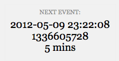

Slides: tollmanz.com/wcsea
There's a Function for That: Doing More for Less With Core Functions
Zack Tollman, 10up LLC
@tollmanz
10up.com
tollmanz.com
Slides: tollmanz.com/wcsea
Zack Tollman, 10up LLC
@tollmanz
10up.com
tollmanz.com
Propaganda
Functions
Use Core Functions
select an option
Add "selected" attribute to an option tag
Aaron Campbell - Twitter Widget Pro 
// $instance['items'] = 6
<select name="get_field_name( 'items' ); ?>">
<?php
for ( $i = 1; $i <= 20; ++$i ) {
echo "<option value='$i' ";
selected( $instance['items'], $i );
echo ">$i</option>";
}
?>
</select>
<option value='5'>5</option> <option value='6' selected="selected">6</option> <option value='7'>7</option>
currently executing filter
Determine the currently running filter within a callback function
Alex Mills - Localtime
public function add_html( $string, $format ) {
switch ( current_filter() ) {
case 'get_the_date':
case 'get_comment_date':
$format = get_option( 'date_format' );
break;
case 'get_post_time':
case 'get_comment_time':
$format = get_option( 'time_format' );
break;
default;
return $string;
}
}
Michael Fields - Taxonomy Images
function taxim_get_terms( $default, $args = array() ) {
$filter = 'taxim-get-terms';
if ( $filter !== current_filter() ) {
taxim_please_use_filter( __FUNCTION__, $filter );
}
}
simpler times
Display a human readable time difference
Zack Tollman/Helen Hou-Sandí - Debug Bar Cron
$time_next_cron = date( 'Y-m-d H:i:s', $unix_time_next_cron ); $human_time_next_cron = human_time_diff( $unix_time_next_cron ); echo '<h2 class="times"><span>'; echo '__( 'Next Event', 'zt-debug-bar-cron' ) . ':</span>'; echo $time_next_cron . '<br />'; echo $unix_time_next_cron . '<br />'; echo $human_time_next_cron . '</h2>';
build a URL
Append query variables and values to a URL
Pippin Williamson - Easy Digital Downloads
function edd_get_download_url( $key, $email, $filekey, $download ) {
$params = array(
'download_key' => $key,
'email' => urlencode( $email ),
'file' => $filekey,
'download' => $download,
'expire' => strtotime( '+1 day', time() )
);
$download_url = add_query_arg( $params, home_url() );
return $download_url;
}
http://site.com/?download_key=key&email=tollmanz@gmail.com...
find a template
Requires a template from either a child or parent theme's folder
Modern Tribe - The Events Calendar
public static function getTemplateHierarchy( $template ) {
$tribe_ecp = TribeEvents::instance();
$templates = array( 'events/' . $template );
if ( $theme_file = locate_template( $templates ) )
$file = $theme_file;
else
$file = $tribe_ecp->pluginPath . 'views/' . $template;
return apply_filters( 'tribe_events_template_' . $template, $file );
}
feature specific code
Requires a file if the theme supports a specified feature
Justin Tadlock - Theme Hybrid Framework
// In Parent
function extensions() {
/* Load the Cleaner Caption extension if supported. */
require_if_theme_supports(
'cleaner-caption',
trailingslashit( HYBRID_EXTENSIONS ) . 'cleaner-caption.php'
);
/* Load the Entry Views extension if supported. */
require_if_theme_supports(
'entry-views',
trailingslashit( HYBRID_EXTENSIONS ) . 'entry-views.php'
);
}
// In Child
add_theme_support( 'entry-views' );
identify objects
Gets the ID for the current page's main object
Thorsten Ott - Nav Menu Cache
function hh_cached_nav_menu( $args = array(), $prime = false ) {
if ( get_queried_object_id() )
$qoi = get_queried_object_id();
else
$qoi = 0;
$nav_menu_key = md5( serialize( $args ) . '-' . $qoi );
if ( ! $nav_menu = get_transient( $nav_menu_key ) ) {
ob_start();
wp_nav_menu( $args );
$nav_menu = ob_get_clean();
set_transient( $nav_menu_key, $nav_menu );
}
return $nav_menu;
}
use PHP in my JS
Writes a JSON encoded object for use with JS
Mo Jangda - Zone Manager
function admin_enqueue_scripts() {
wp_enqueue_script( 'zon-js', URL . 'js/zoninator.js', ... );
$options = array(
'baseUrl' => $this->_get_zone_page_url(),
'adminUrl' => admin_url(),
...
'zoneLockPeriod' => $this->zone_lock_period,
'zoneLockPeriodMax' => $this->zone_max_lock_period,
);
wp_localize_script( 'zon-js', 'zoninatorOptions', $options );
}
<script type='text/javascript'>
/* <![CDATA[ */
var zoninatorOptions = {
"baseUrl":"http:\/\/site.com\/wp-admin\/admin.php?page=zoninator",
"adminUrl":"http:\/\/site.com\/wp-admin\/",
"ajaxNonceAction":"zone-nonce-ajax-action",
"errorGeneral":"Sorry, something went wrong! Please try again?",
"errorZoneLock":"Sorry, this zone is in use by another user and is currently locked. Please try again later.",
"errorZoneLockMax":"Sorry, you have reached the maximum idle limit and will now be redirected to the Dashboard.",
"zoneLockPeriod":"30",
"zoneLockPeriodMax":"600"
};
/* ]]> */
</script>
<script type='text/javascript'
src='http://site.com/wp-content/plugins/zoninator/js/zoninator.js?ver=0.2'></script>
impress my friends
Select a single index's value from a collection of similar objects/arrays
$posts = get_posts(); var_dump( $posts );
array
0 =>
object(stdClass)[81]
public 'ID' => int 801
public 'post_author' => string '1' (length=1)
public 'post_date' => string '2012-05-04 17:40:12' (length=19)
...
1 =>
object(stdClass)[82]
public 'ID' => int 797
public 'post_author' => string '2' (length=1)
public 'post_date' => string '2012-05-04 17:39:30' (length=19)
...
2 =>
object(stdClass)[83]
public 'ID' => int 784
public 'post_author' => string '1' (length=1)
public 'post_date' => string '2012-04-29 01:22:08' (length=19)
...
$posts = get_posts(); $ids = wp_list_pluck( $posts, 'ID' ); var_dump( $ids );
array 0 => int 801 1 => int 797 2 => int 784
Kailey Lampert - Add New Default Avatar
function upgrade() {
//upgrade option, we can now save multiple avatar options
$opts = get_option( 'kl_addnewdefaultavatar', false );
//get current default option
$current = get_option( 'avatar_default' );
//get any custom created avatars
$unavailable = wp_list_pluck( $opts, 'url' );
//if the current wasn't created by this plugin, update the backup
if ( ! in_array( $current, $unavailable ) )
update_option( 'pre_anda_avatar_default', $current );
}
@!~& up my site
When to Use WP_Query(), query_posts(), and pre_get_posts
Querying Posts Without query_posts()
Use more Core functions
Read more Core
Zack Tollman
@tollmanz
10up.com
tollmanz.com